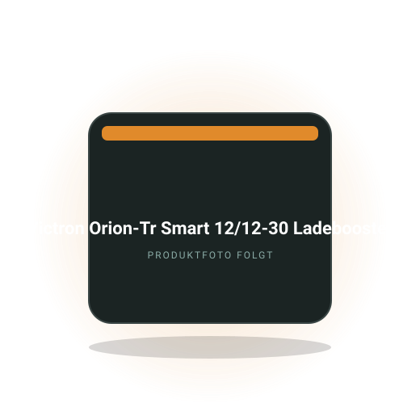

Ratgeber · Batterie & Strom
Elektrik im Sprinter-Ausbau: Bordbatterie, Ladebooster und Sicherungen
Wie du Verbrauch rechnest, Batteriegröße und Ladebooster wählst, Querschnitte bestimmst und das System sauber absicherst.
Camper · Selbstausbau
Du baust einen Mercedes Sprinter selbst zum Camper aus oder planst es: Hier findest du Ausrüstung, Elektrik-Planung, Dämmung, Bett-Varianten und Zulassungsfragen für den Selbstausbau. Mit Praxiswissen, Rechenbeispielen und einer Empfehlung.
Wenn du vor dem Kabelsalat stehst und nicht weißt, wo anfangen: Dieser Beitrag führt dich vom Tagesverbrauch über die Wahl zwischen 100 und 300 Ah LiFePO4 bis zu Ladebooster, Solarregler und Landstrom. Du bekommst einen Schaltplan zum Nachbauen, eine Liste der Sicherungen und Querschnitte und die Fehler, die bei Euro-6-Sprintern besonders häufig passieren.
Erscheint in Kürze
Redaktions-Tipp
Der DC-DC-Lader, der die Bordbatterie im Sprinter mit Euro-6-Lichtmaschine zuverlässig voll macht.
Warum wir es empfehlen: Neuere Sprinter haben eine intelligente Lichtmaschine, die ohne Ladebooster die Zweitbatterie kaum lädt; der Orion-Tr Smart erkennt den laufenden Motor über die Spannung oder einen D+-Eingang und lädt mit konstanten 30 Ampere. Für Bordbatterien von 100 bis 200 Ah ist das der verbreitete Mittelweg zwischen Ladezeit und Kabelquerschnitt.
Preis-Range200 bis 300 €Stand Oktober 2026
Bei Amazon ansehenAffiliate-Link *Preis bleibt für dich gleich. Kabel, Sicherungen und Einbau kommen dazu.
Kostenlos als PDF
Strom, Schlafen, Küche, Sanitär, Sicherheit, Werkzeug. Zum Abhaken vor jeder Fahrt, damit du nie wieder ohne Ladekabel, Wasserschlauch oder Keil losfährst.
Wie du Verbrauch rechnest, Batteriegröße und Ladebooster wählst, Querschnitte bestimmst und das System sauber absicherst.
Welche Stärke wohin gehört, warum Kondenswasser der eigentliche Gegner ist und wie viel Material ein L2H2 braucht.
Was die Innenbreite für Querschläfer bedeutet, wie viel Stauraum jede Variante kostet und welche Matratze passt.
Welche Fenster zum Sprinter-Blech passen, wie der Ausschnitt gelingt und welche Thermomatten im Winter wirklich dicht halten.

Zyklen, Gewicht, Entladetiefe und Preis pro nutzbarer Wattstunde. Wann sich der Aufpreis rechnet.

Warum Euro-6-Fahrzeuge einen DC-DC-Lader brauchen, welche Amperezahl passt und was beim Einbau zählt.
Die Fragen, die am häufigsten gesucht werden. Ausführlich beantwortet, mit Zahlen, Rechenwegen und den Fehlern, die du dir sparen kannst.
Für den Selbstausbau hat sich der Sprinter als Kastenwagen mit mittlerem Radstand und Hochdach, kurz L2H2, als Allrounder bewährt: rund sechs Meter lang, Stehhöhe im Innenraum, noch alltagstauglich. Wer viel Stauraum oder ein festes Längsbett plus Bad will, greift zum L3H2 mit etwa sieben Metern.
Bei der Baureihe spielen Budget und Technik zusammen. Der Sprinter 906 (2006 bis 2018) ist günstiger und einfacher zu verkabeln, der 907 ab 2018 bietet moderne Assistenzsysteme und das MBUX-System, hat aber eine intelligente Lichtmaschine, die einen Ladebooster zwingend macht. Heckantrieb ist Standard, Allrad und Frontantrieb sind seltener und teurer. Achte beim Gebrauchten auf Rost an Radläufen und Schiebetürschiene sowie auf hohe Laufleistungen aus dem Kurierdienst.
Oft vergessen: das zulässige Gesamtgewicht. Ein 3,5-Tonner lässt nach dem Ausbau mit Wasser, Batterie und zwei Personen oft nur 300 bis 500 Kilogramm Zuladung übrig. Mit Auflastung oder einem 4-Tonner wird es entspannter, dafür greifen andere Führerschein- und Mautregeln.
Ein solider Selbstausbau mit Dämmung, Elektrik, Bett, Küche und Wasser kostet in Material ca. 8000 bis 20000 Euro, Stand Oktober 2026, ohne das Basisfahrzeug. Minimalisten kommen mit 4000 bis 6000 Euro aus, Ausbauten mit Bad, Standheizung, großer Lithium-Batterie und Fenstern erreichen schnell 25000 Euro und mehr.
Die großen Posten: Elektrik mit LiFePO4-Batterie, Ladebooster, Wechselrichter und Solar liegt bei 1500 bis 4000 Euro. Dämmung mit Armaflex für einen L2H2 kostet 500 bis 1000 Euro. Fenster mit Einbau 300 bis 800 Euro pro Stück. Standheizung 200 bis 1500 Euro je nach Marke und Einbau. Dazu Holz, Beschläge, Wassertechnik, Kühlbox, Matratze und die vielen Kleinteile, die am Ende 20 bis 30 Prozent des Budgets ausmachen.
Plane die Zeit mit ein: Ein erster Ausbau neben dem Beruf dauert selten unter sechs Monaten, oft ein Jahr. Rechne mit Werkzeugkosten und Fehlkäufen. Und halte Geld für die Zulassung als Wohnmobil zurück, inklusive Prüfung, Umschreibung und eventuell einer Abnahme für Sitzbank oder Gasanlage. Zur Elektrik-Planung im Sprinter
Ja, aber knapp: Die Innenbreite des Sprinter-Kastenwagens liegt zwischen den Wänden bei etwa 1,78 bis 1,80 Metern, nach Dämmung und Verkleidung bleiben für ein Querbett rund 1,70 bis 1,75 Meter Liegefläche. Wer größer als etwa 1,75 Meter ist, braucht Ausbuchtungen für die Füße in der Wandverkleidung oder ein Längsbett.
Das Querbett spart Länge und schafft darunter eine Garage für Fahrräder oder Boxen, deshalb ist es im L2H2 die häufigste Lösung. Mit Flares, also nach außen gewölbten Blenden anstelle der Blechflächen, gewinnst du auf jeder Seite einige Zentimeter, musst dafür aber Blech ausschneiden. Ein Längsbett braucht mindestens zwei Meter Länge und frisst Wohnraum, ist dafür für Größere bequem. Hubbetten geben tagsüber den Raum frei, kosten aber Kopffreiheit und Geld.
Miss vor dem Bau mit fertiger Dämmung und Verkleidung, nicht am nackten Blech. Plane die Matratze mit, denn Standardmaße passen selten; viele Ausbauer lassen Kaltschaum zuschneiden. Und denk an die Fensterposition: Ein Fenster in Kopfhöhe am Querbett ist nachts kalt und tagsüber ein Sichtschutz-Thema. Zum Vergleich der Bett-Varianten
Für den Sprinter-Ausbau ist selbstklebendes Armaflex in 19 Millimetern an Wänden und Decke der verbreitete Standard, ergänzt durch dünneres Material in Sicken und Holmen. Es nimmt kein Wasser auf, klebt direkt auf dem Blech und wirkt gleichzeitig als Dampfbremse, wenn es lückenlos verlegt wird.
Der eigentliche Gegner ist Kondenswasser: Warme, feuchte Innenluft trifft auf kaltes Blech und schlägt sich nieder. Offenporige Materialien wie Glaswolle oder Schafwolle saugen das auf und fördern Rost, geschlossenzelliger Kautschuk wie Armaflex nicht. Für einen L2H2 brauchst du grob 15 bis 25 Quadratmeter in 19 Millimetern plus Material für den Boden, meist 6 bis 10 Millimeter unter der Bodenplatte. Styropor oder XPS passt sich den Rundungen nicht an und knarzt.
Entfette das Blech, arbeite ab 15 Grad, überlappe Stöße nicht, sondern stoße sie bündig und tape sie ab. Dämme auch die Türen und das Dach über dem Bett, dort entsteht sonst Tropfwasser. Und lass die Hohlräume hinter der Verkleidung entweder belüftet oder dicht, beides geht, nur nicht halb.
Ein ausgebauter Sprinter wird nach Abnahme bei TÜV, DEKRA oder GTÜ als Wohnmobil umgeschrieben, wenn er die Mindestausstattung hat: Sitzgelegenheit mit Tisch, Schlafplätze, Kochmöglichkeit und Stauraum, jeweils fest eingebaut. Dazu braucht es Stehhöhe von mindestens 1,70 Metern im Bereich der Kochstelle, Lüftung und bei Gas eine Gasprüfung.
Die Prüfstelle bewertet nach der Richtlinie zur Begriffsbestimmung für Wohnmobile, die im Verkehrsblatt veröffentlicht ist; die Kochstelle muss fest montiert sein, ein loser Campingkocher reicht nicht. Mit der Umschreibung ändert sich die Fahrzeugklasse von Lkw zu Wohnmobil, was bei der Kfz-Steuer und oft bei Versicherung und Maut günstiger ist. Zusätzliche Sitzplätze, Gasanlagen, Fenster und Dachaufbauten brauchen eigene Nachweise oder Gutachten. Der Termin kostet ca. 100 bis 250 Euro, Stand Oktober 2026, plus die Gebühr der Zulassungsstelle.
Fehler, die den Termin platzen lassen: Küche nicht festgeschraubt, keine Belüftung, Kabel ohne Sicherung, Gasflasche frei im Raum, Bett ohne feste Konstruktion. Ruf vorher bei der Prüfstelle an und frag, welche Unterlagen und Fotos sie sehen will. Manche Stellen schauen sich das Fahrzeug auch halbfertig an und sagen dir, was fehlt.
Noch nicht geholt?
120 Punkte nach Bereichen sortiert. Dazu neue Video-Tests und Ratgeber, sobald sie online sind.